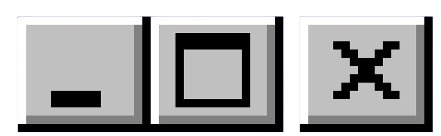
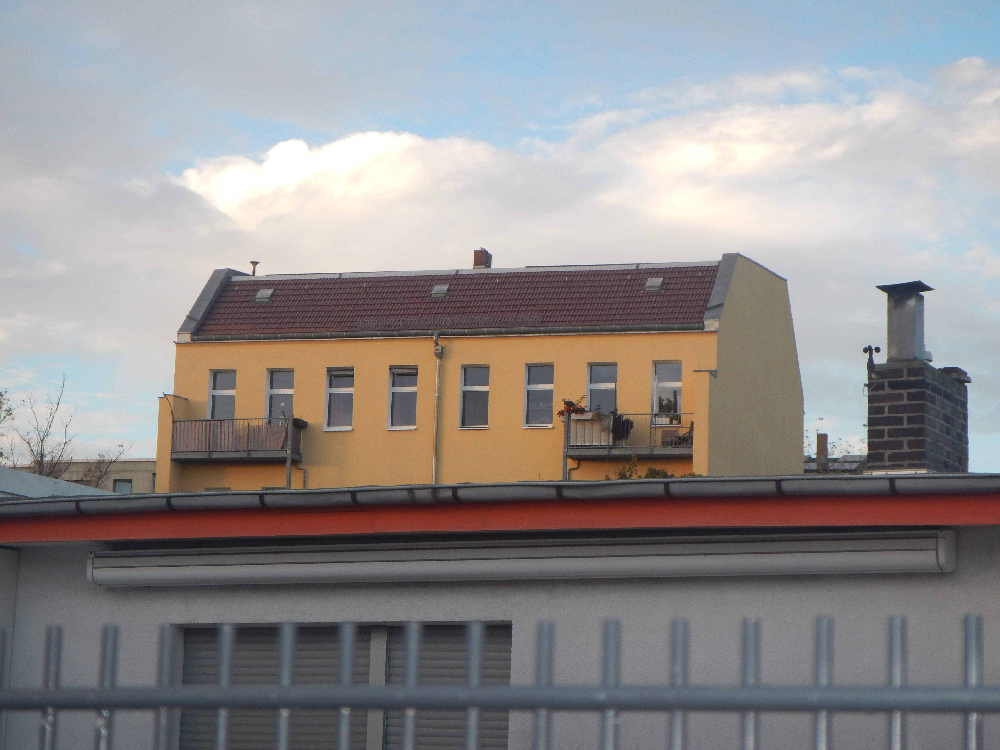
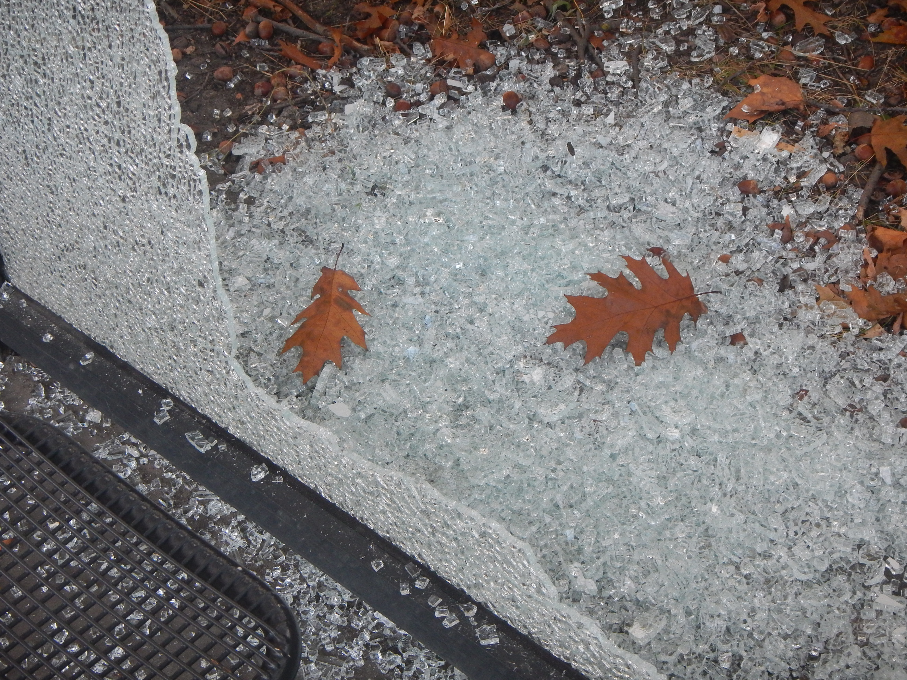
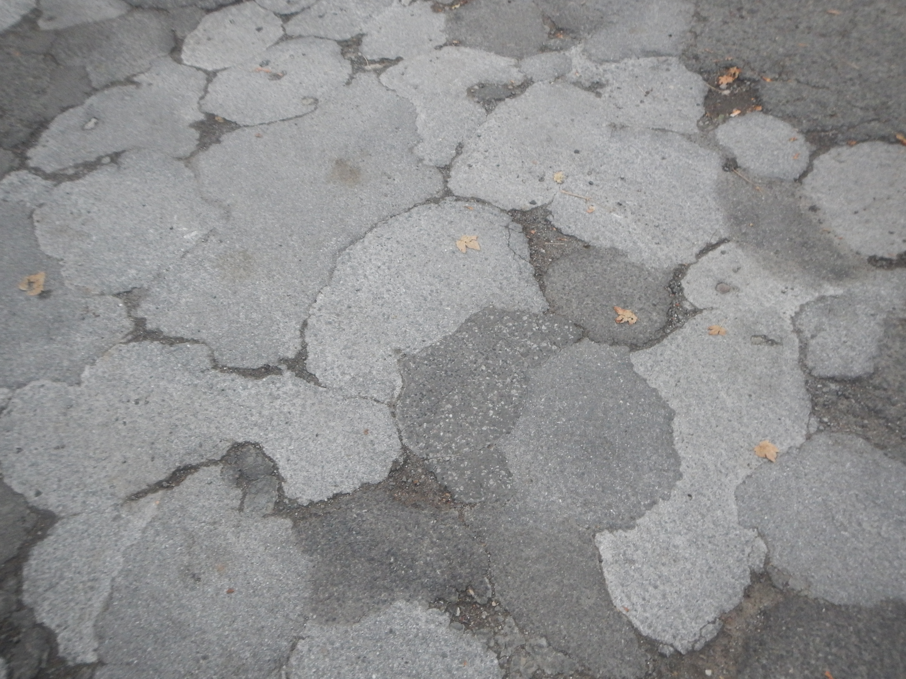
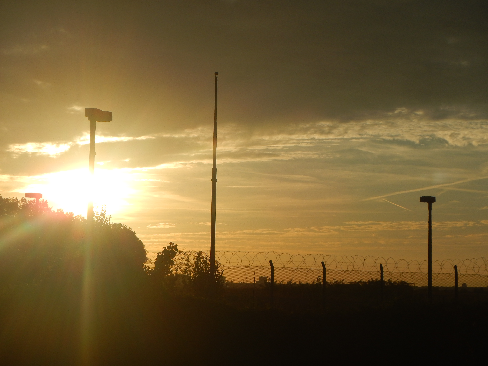
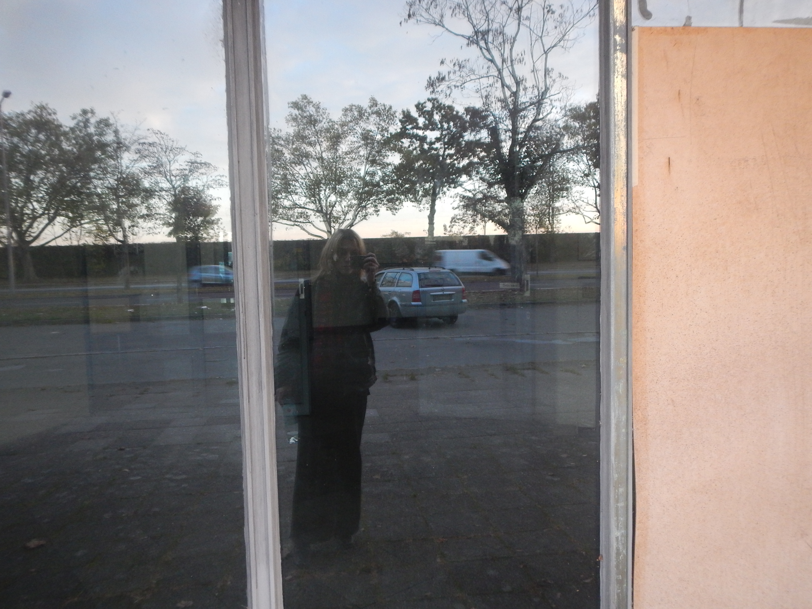
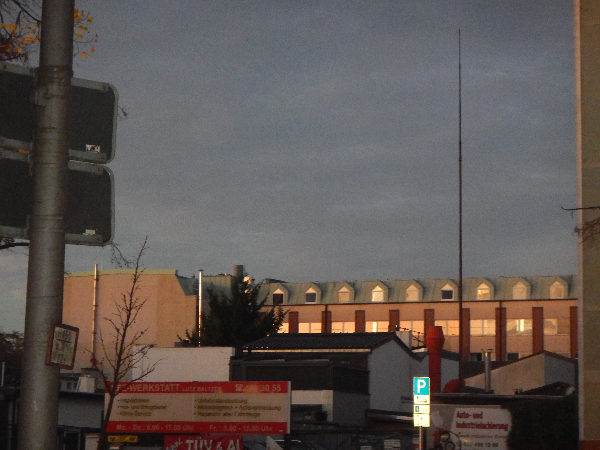

|

|
|
|
|
|
October 18. 2026
|






|
|
|
A man sits at a desk behind a small cruel window. He considers how he has always dreamed
of sitting behind such a desk,
in such a hotel,
beneath just such a flickering grey light.
and in his dream hardly anyone would come. He remembers an old story, one
of being at the beach with a group of people, one
where he was innocent and very different. He considers what it felt like to be innocent. To be only talked to and never talk back. He considers
when dark wind was only exciting and not ominous, and when he would look around in the dark streets and ..
the door at the far side of the room opens,
a woman with grey hair comes in wheeling a suitcase. She hesitates on the center rug, looking a moment at the queer plastic paintings
on the walls.
He has looked at them many times and finds her interest in them pleasing. She rolls her suitcase slowly to the small window, and asks for a room in the
common language of the city. He looks back at her a moment before going to the back wall where many keys hang in perfect rows on wooden bands. He finds
the one he wants and returns to the small window. He thinks it is really like the hole in a stable where perhaps a horse would be resting. He wonders
which is the animal, him or her? She has not moved from the small hole, her face illuminated in a sickly way by the far light.
The check-out is at 10.
He says simply, and her expression makes no move. Her features are very taunt and he wonders what she is even capable
of feeling, great happiness seems somewhere far away. She nods smoothly and reaches a hand through to take the key. He thinks of many things he could ask
her but instead he waits in an uneasy silence, she is looking down at the tarnished key and turning it in her hands,
You will be here all night? she asks,
We are staffed all night.
-- and it will be you?
It is always me.
Something had softened between them,
Then we will both be sound by morning.
she says, and pulls the heavy bag behind her up the great staircase.
As he watched, the man returned to his private thoughts.
--- --- ---
You are the woman in the room? I asked her plainly.
I am. she said, equal.
What will you do here?
She could have laughed,
I won't DO anything, I came to stay in the room.
You won't speak to me?
I never said that, and she went quiet.
Light had fallen perfectly on the purple fabric of the suitcase between us. Certainly it was large enough.
If you must know, I've kidnapped my mother.
What do you intend to do with her?
Take her with me.
Where?
Anywhere that I go.
Is she dead or alive?
It just matters that she's with me,
I took this to mean she was dead.
Do you really need her that much?
I get lonely going to new places. This city, all these stiff grey buildings that all look more-or-less the same.
You find it scary too, don't you? The way they look down at you? and all that molded concrete attached at high
angles, there's no reason it couldn't fall on the head someday.
I see, only it's not something I worry so much about.
She took a drag of the cigarette hovering in the air between us.
Perhaps you worry about the wrong things.
But should that happen, I paused to take in her demeanour.
What could your mother do?
Nothing, but it'd be nice to have her.
I see.
Surely you miss yours?
I thought of mine, really she was in a grey-walled home more similar to a sanitorium than the 'rest home' label on the front sign. The walls
had seemed unbearably dingey, but I often imagined her sitting outside on a lawn chair instead, more bearable that way.
I told this to the woman and she looked at me strangely.
Better to accept the truth of your relationship, than to imagine it someway else.
There was of course no creaking from the suitcase.
I suppose you have a good relationship with yours then,
She said nothing and seemed to be looking for something on the back wall behind me. I turned,
Something there?
Must be a trick of the light, you don't have a mirror behind you?
I turned back, No, I don't believe so,
I thought I saw my own reflection somewhere there, or perhaps it was only the back of your head.
She was making me uneasy. I wished she would take the weighty suitcase and leave me to my thoughts.
You've been very hospitable to us, she said kindly, and took the handle in one wrinkled hand. Her nails were newly french tipped,
long and thickly enameled,
When she left I thought of her up in the room. It wasn't healthy to be alone on a night like this.
To be left feeling the uneasy movement of soft fibers, traveling through the gaps in the walls.
|
|
October 14. 2026
|
somewhere in America
the woman miraculously survives her execution
I wait to see what it means
for the state of things,
if they'll have to admit we are still
living in the courtyard square
--and for all the legality and
titled chemicals
it's still only --
the world feels lifeless. Except,
birds fly above me and settle on grey wires, fish probably
wait in a stream somewhere, there are of course
insects,
but to what I see, lately there are only the cold sides of buildings,
the emptiness of cities which don't end,
just lead to cold meadows, then trees, then again to the same.
it is as it is, my job is simply to continue in my way, the same as
everybody else.
my job is to walk down the street, to continue on to work, to not
stop and consider the birds on the wire. How it really
doesn't matter to them,
that I kept my head looking forward.
It is Sunday and no one is in the shop,
a steel-rimmed clock is looking down at me above
the door,
I'm sure I put it there but now I
hardly remember. It could have been someone else entirely
who stood on the rickety chair and
placed it there.
As it stands I can barely read the time,
it's too high up and the numbers blur together
so I must focus very hard to read it.
From the height of the sun it is
about mid-day and I go to sit
outside for a moment, watching
the hazy motion of passersby
drifting around like clouds
groups merging and then stringing out
across the sidewalk, no one comes nearer,
the velvet leaf
of a plant near the wall
catches my eye it's soft purple
reminding me of skin,
curling up from the dirt
and I
think of O'Keeffe suddenly
without knowing my hand already
to the soft fibers
there is a ring from the door
a large man enters
looking around the shop
in a massive coat as though
he is concealing something
also by his uneasiness
I realize I can't see his hands
he never looks at me
only down at the leaves
but in a far-off way I know
he won't buy anything
in a few moments he turns
back to the door quickly
the bell rings
once more
we didn't say anything
I look absently out the window
her soft skin completely forgotten
I imagine his motives
my eye caught in
the same flower again
this time a small beetle crawls
down the spine
I try and ignore it but
I'm looking for others,
fine salt crystals
suddenly look like something
specks of dirt beneath
the chair seem to be shifting
position like dust
in the eye, 'Did
something happen?'
a voice asks softly from the back room,
I smile to myself and never
turn only stare further
through the wide window
thin silk moving down
the panes there's no
knowing where it started
a slow process or perhaps
only a single day,
it was difficult
to think of ways out now
the pathways long dried
now
from
long periods of not
being used.
|
|
|